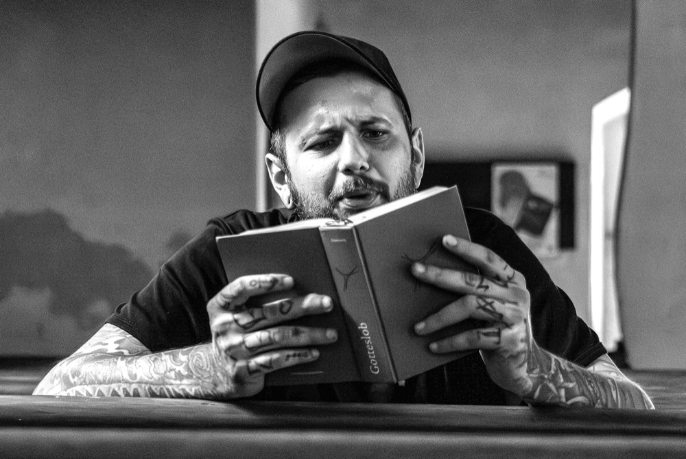
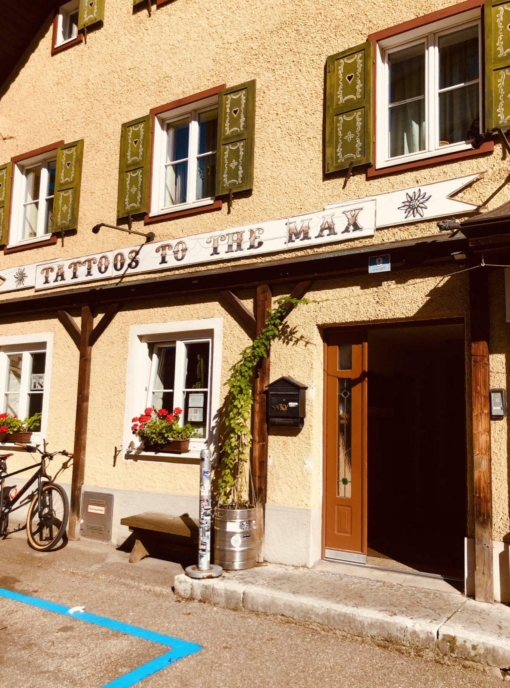
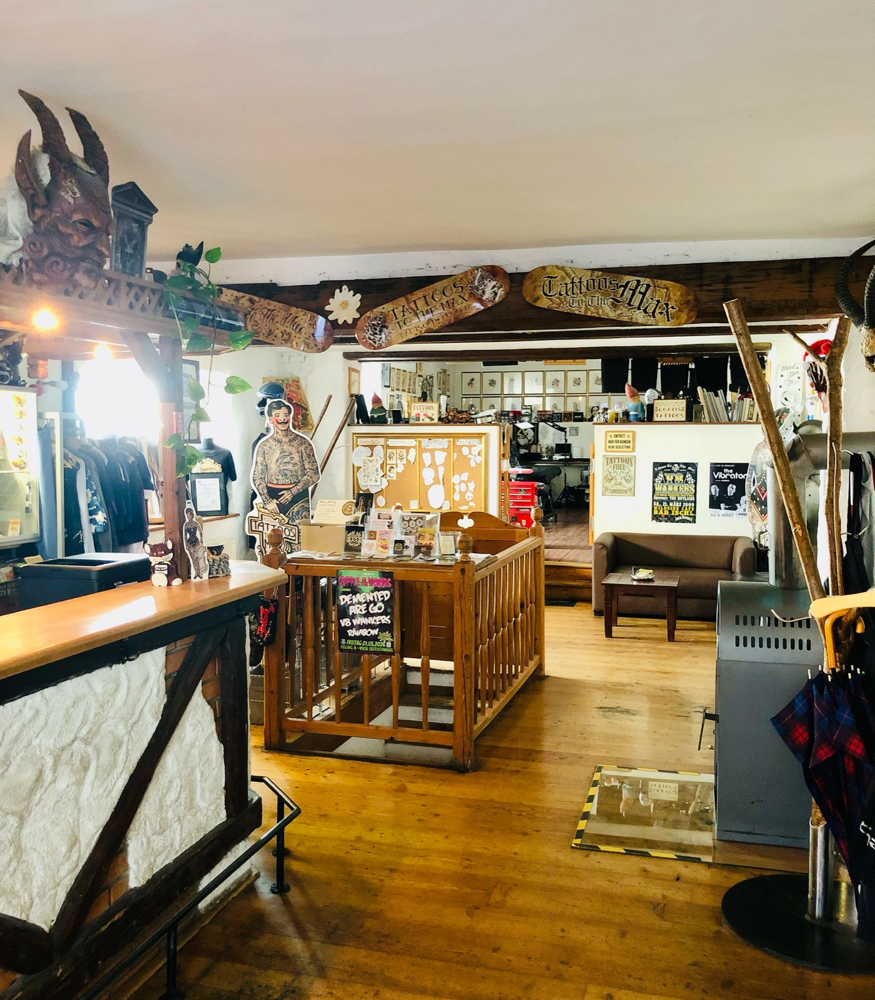
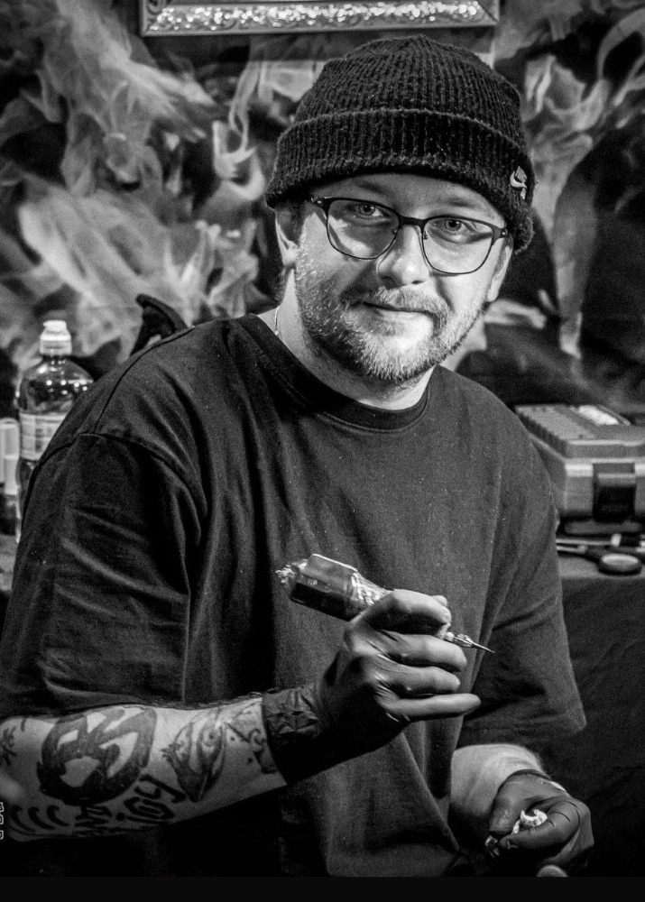

Seit 1996.
Handwerk und Klarheit.
Tattoos to the Max steht für saubere Arbeit, ehrliche Beratung und eine ruhige Atmosphäre – direkt am Auböckplatz in Bad Ischl.
1996gegründet
4Tätowierer
1.Samstag im Monat
Tattoo-Studio · Bad Ischl · Österreich
Ordentliche Tätowierungen, klare Absprachen und Zeit für ein gutes Gespräch. Mitten im Salzkammergut.

Bad Ischl · seit 199601 — Das Studio
Tattoos to the Max steht für saubere Arbeit, ehrliche Beratung und eine ruhige Atmosphäre – direkt am Auböckplatz in Bad Ischl.
Geschichte
1996 begann Mäx in der Garage seines Hauses in der Bad Ischler Stiegengasse offiziell zu tätowieren und gründete Tattoos to the Max. Als die Räumlichkeiten zu klein wurden, zog das Studio im Winter 2008/09 an seinen heutigen Standort am Auböckplatz 9. Seit Jänner 2026 führt Felix Kaltenbach das Studio gemeinsam mit dem bestehenden Team weiter.
Im Empfangs- und Wartebereich ist Platz für Beratungen, Gutscheinkäufe und unseren kleinen Flohmarkt. Dahinter arbeiten die Artists an mehreren Arbeitsplätzen in entspannter Atmosphäre und nach höchsten Hygienestandards.


02 — Tätowierer
Jeder Tätowierer arbeitet mit eigener Handschrift. Die Arbeiten unten sind eindeutig zugeordnet.


Mäx, Gründer von Tattoos to the Max, ist seit Jänner 2026 im Ruhestand. Sein Stil: Traditional.
03 — Arbeiten
04 — Gut zu wissen
✳Komm während der Empfangszeiten vorbei oder sende uns deine Anfrage per E-Mail oder Instagram-DM. Beschreibe deine Idee, die gewünschte Körperstelle und Größe möglichst konkret und schick passende Referenzen mit. So finden wir den passenden Artist und vereinbaren ein Vorgespräch oder einen Termin.
Wir zeichnen erst nach erfolgter Terminvereinbarung und versenden keine Entwürfe vorab. Letzte Änderungen setzen wir am Termintag gemeinsam mit dir um.
Komm ausgeschlafen, gut gestärkt und in bequemer Kleidung, die gegebenenfalls Farbe abbekommen darf. Die zu tätowierende Hautstelle sollte unverletzt, nicht sonnenverbrannt, unrasiert und leicht zugänglich sein. Kissen, Buch oder Snacks für die Pause sind willkommen; bitte bring keine Begleitpersonen mit.
Aktuell ist nur Barzahlung möglich.
Dein Tattoo braucht mindestens drei Wochen Heilzeit. Folge den individuellen Hinweisen deines Artists für Folie oder Heilpflaster. Hände vor jedem Kontakt gründlich waschen, Tattoo sauber halten und nur bei Bedarf hauchdünn mit Wundheilsalbe pflegen. Nicht kratzen und nicht überpflegen.
Während der Heilung: keine Sonne, Sauna, Solarium, Chlor- oder Salzwasser, Massagen oder Reibung. Bei Unsicherheit oder Problemen bitte sofort bei uns melden.
Traditional, Black & Grey, Realism, Neo-Traditional, Lettering, Anime und langlebige Fineline-Tattoos – ergänzt durch wechselnde Gastartists.
Eine individuell vereinbarte Baranzahlung kann deinen Termin fixieren und wird mit dem Preis des Tattoos verrechnet. Bei einer Absage oder Verschiebung bis spätestens drei Werktage vorher bleibt sie bestehen. Bei einer kurzfristigeren Absage oder bei Nichterscheinen kann sie verfallen.
Unter 16-Jährige werden nicht tätowiert. Bei Minderjährigen ab 16 Jahren entscheiden wir verantwortungsvoll im Einzelfall. Zum Termin benötigen wir die schriftliche Einverständniserklärung eines nachweislich Erziehungsberechtigten.
Gutscheine mit frei wählbarem Wert sind vor Ort gegen Barzahlung erhältlich und bei allen Artists einlösbar. Jeden ersten Samstag im Monat ist Walk-in Day für kleine Tattoos bis Handflächengröße; die Terminannahme ist von 11 bis 12 Uhr. Wenn du außerhalb der Empfangszeiten spontan vorbeikommen möchtest, kläre am besten vorher ab, ob jemand vor Ort ist.
Nein. Wir tätowieren ausschließlich.
05 — Kleidung und Shop
06 — Termine
Schick uns deine Motividee, die gewünschte Größe und Körperstelle sowie einige Referenzbilder. Wir melden uns, um alles Weitere zu besprechen.
Der Empfang ist freitags von 13 bis 18 Uhr und samstags von 11 bis 14 Uhr besetzt. Tätowiert wird täglich nach Terminvereinbarung.
Auböckplatz 9
4820 Bad Ischl
Österreich
Aktuell